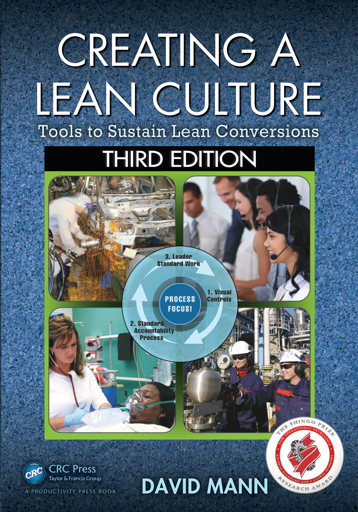

费老师拆书系列 · 第 3 本《创建精益文化》。把一本书读厚，再拆薄。 这一本，专治”精益做完就退回去”。
为什么翻开它
先讲个故事：美国一个中型城市的市中心医院，急诊科病人常常要等 4 个小时以上才被接诊，堵到得让救护车改道别家——而这家医院大部分新病人和收入，都是从急诊这个口子进来的。董事会里有几位本地制造企业的 CEO，自己厂里做过精益，就建议：请精益顾问来改急诊。
这个项目做了将近两年，按任何标准都算成功：分诊标准化，由有临床经验的护士做，几分钟搞定；分诊后分两条流，80% 走”治疗后离院”，20% 走”诊断后收治”；病床周转和检查前准备全部标准化；护士交叉培训学会抽血，不用再等抽血员；X 光机直接搬进急诊科。
结果：等待被彻底消除，“治疗后离院”这条流从进门到出院压到 2 小时出头。
作者两年后回去转了一圈。原话是——“改善几乎没剩下什么。”
为什么？书里写得毫不留情：项目结束时，新流程、新角色、新标准、新期望一份文件都没留下，没有任何持续监督的机制，整套东西完全依赖具体的人。人一动，全散。
这本书叫《Creating a Lean Culture》，作者 David Mann，费老师翻译成《创建精益文化》，第三版。它不教你搭看板、拉单元流、做 5S——那些书太多了。它只回答一个问题：
为什么工具都对，人也努力，两年后却回到了原点？

老规矩，读厚拆薄，咱们走一回。
读厚：溯到源头
费老师书架上讲精益的书不少，为什么单挑这本刨到底？
因为绝大多数精益书写的是精益生产系统——怎么让物料和信息流动起来。而这本书写的是精益管理系统，它盯的是另一半：领导者每天到底该干什么，才能让那套生产系统不退化。
作者 David Mann 在办公家具巨头 Steelcase 干了 15 年精益，亲手支撑过 40 多条精益制造价值流转型、带内部顾问团队做成 100 多个业务流程价值流改造；2005 年自立门户做精益咨询，2009 年从 Steelcase 退休。这本书从 2005 年第一版写到第三版，中间隔了十年，而这十年的演进本身就是最值得刨的地方：
- 第一版回答的是：“一线领导者缺什么？” 答案是精益管理系统——领导者标准作业、可视化管理、日常问责、纪律，这四样。
- 第二版回答的是：“这套东西怎么教会人？” 答案是师徒制加现场巡走（Gemba Walk）。
- 第三版回答的是一个更扎心的问题。
作者在第 8 章开头写道：精益管理系统这个”缺失的一环”，这十年确实起作用了，帮很多转型活了下来。但解决一个问题，暴露出下一个——即使那些工具、行为、实践都做到位的成功案例，也还在冒风险：高管的参与是淡的、弱的、甚至没有的。
他把这称为第二个缺失的环节。而且判断很冷静：战术层的成功，恰恰把战略层的失败暴露了出来。
费老师读到这儿拍了下桌子。这不就是国内一大票企业的现状吗——车间里精益搞得有模有样，老板层面永远是”我支持，你们去做”。然后新的战略一来、新的高管一上任，精益就成了那个第一个被砍的预算。
一本书写三版，每一版都是在回答”上一版解决完之后新露出来的那个问题”。这种刨法本身就值得学。
拆开：挑三个亮点
亮点 1｜精益管理系统就是一辆车，四个零件缺一不可。
书里第 2 章有张图（图 2.1），费老师第一眼就服了。他把整套精益管理系统画成一辆车：
- 发动机 = 领导者标准作业（Leader standard work）——提供动力
- 变速箱 = 可视化管理（Visual controls）——把动力变成抓地力
- 油门和方向盘 = 日常问责流程（Daily accountability process）——控制方向和快慢
- 燃料 = 纪律（Discipline）——没它，前面三样都不转
 精益管理系统四要素（费老师中英重绘）
精益管理系统四要素（费老师中英重绘）
这个比喻好在哪？它说明了为什么单独上一样没用。
只有标准作业没有可视化——领导每天照单子转，但看不见问题在哪。只有可视化没有问责——数据挂满墙，没人处理。只有会议没有标准作业——每天开会，但会上问的东西全凭当天心情。
书里的图 2.2 又把这个逻辑往前推了一步：精益工具先让过程达到新的稳定水平，精益管理负责守住成果、捕捉偏差并指派行动；随后再用工具改善，再用管理稳定。工具与管理不是二选一，而是交替向上。
 稳定与改善循环（原书 Figure 2.2 忠实重绘）
稳定与改善循环（原书 Figure 2.2 忠实重绘）
书里第 1 章还有一张更狠的图（图 1.1）：这四样其实是个闭环——可视化管理发现”实际 vs 预期”的差距 → 日常问责把差距变成任务指派 → 领导者标准作业跟进这些任务是否落实 → 又回到可视化。圆心两个字：盯过程（Process Focus）。
亮点 2｜观察颗粒度从 1 小时缩到半小时，达成率掉了 20 个点。
这是费老师全书最喜欢的一个案例（Case 4.3）。
作者和一位价值流经理巡现场，看到两个单元稳定达成、甚至经常超额完成每小时目标。一般人到这儿就走了——没问题嘛。他们俩反而停下来商量：要不要把观察间隔从 1 小时缩到半小时？
为什么？因为这两个单元做的是每天变化的订制混流，有的机型工作量小做得快，有的大做得慢。如果一串”快”机型正好排在某次停线之后，它们省下的时间就把那次停线盖住了——在一小时的粗颗粒下，问题根本不露头。
改了之后，数据变得很难看：节拍达成率从 80% 后段、90% 中段，直接掉了约 20 个百分点。
掉下去的这 20 个点不是变差了，是原本被藏起来的问题浮出来了。顺着查下去，发现根因是数据库里的标准工时不准——有的偏高有的偏低，导致这两个单元的产能随当天做什么机型而随机失真。
费老师带企业最常遇到的一句话是：“我们的指标都挺好的啊。” 这个案例给的回答是：你的指标好，可能只是因为你的尺子太粗。
亮点 3｜为了 95% 的达标率，班长把丢了 2 台的节拍涂成了绿色。
Case 9.3，全书最锋利的一刀。
作者去一家号称精益走得很远的工厂，发现”节拍达成率”被写进了每天两次的生产会议议程，四条价值流的目标统一定成 95%。节拍是 30 分钟一格，8 小时班次共 16 格，95% 意味着16 格里必须有 15 格达标。
现场看跟踪图，有一行：实际 28 台，比预期少 2 台，却涂成绿色，“未达成原因”栏一片空白。
作者和陪同的工程师站在图前发懵。装配班的团队领导走过来，很客气地解释：
“我们壁挂件的料一直缺，但今天全队都在，线也跑得好，正好压在节拍上。要是当时有料，我们本来就能按节拍做出来，所以那几拍我涂了绿色。”
这话有毛病吗？逻辑上一点毛病没有。她甚至是善意的、认真的。
但缺料这个真问题，就此在数据里彻底消失了。
费老师读到这里想了很久。当”95%“变成一个必须达成的结果目标，一线就会（往往是好心地、合乎逻辑地）重新定义什么叫”达成”。于是跟踪图不再记录真实，开始记录愿望。
这就是书里反复强调的那对矛盾：盯过程，还是盯结果。 你以为你在管理，其实你只是在给指标施压。
四个要素怎么咬合成一个能自己转起来的闭环，书里还有一张图说得更清楚：领导者标准作业产生每天的观察，可视化管理把观察变成看得见的事实，日常问责会把事实变成任务，任务做完又回到标准作业里被检查——四步接不上任何一环，整个轮子就停在那儿变成摆设。
 精益管理闭环（费老师中英重绘）
精益管理闭环（费老师中英重绘）
换成你的厂：不用四个要素一起上。先挑最短的一环——找一块白板、定一个每天二十分钟的碰头时间，把”昨天没达成的原因”写上去、指定一个人、写上日期。这一环转起来，另外三环会被它逼出来。
拆薄：搬进车间
这本书费老师拆下来，最能直接上手的是十一张表——全部按原书高价值表格或图式做成可编辑工具，表头中英对照，出处页码都标着，方便对着原书较真。下面先讲六张基础表，再补五张把“现场诊断—改善选择—A3计划—用工—技能”串起来的执行表。
第一张，《领导者标准作业典型项目表》（原书表 3.1）。这张最值钱。它把团队领导 / 主管 / 价值流经理 / 厂长高管四种角色，每天分别该做哪些动作，一格一格列出来了。比如团队领导每天要”查考勤来电、调整用工计划、主持 5–10 分钟班组一层会”；主管要”主持二层会、和团队领导一对一现场巡走”；厂长要”核查各级领导者标准作业""看团队领导和主管在不在现场，不在就问为什么”。照着改改就能用。
原书图 3.1 解释了为什么这张表不能按层级各写各的：高管、经理、主管、班组长的标准作业必须彼此重叠，让每一层都向下验证过程、向上暴露系统障碍，底部共同锚定标准化流程。
 领导者标准作业跨层重叠（原书 Figure 3.1 忠实重绘）
领导者标准作业跨层重叠（原书 Figure 3.1 忠实重绘）
第二张，《生产节拍跟踪表》（原书图 4.1）。示例版里填的是原书那份真实数据（B211 装配区、节拍 60 秒、全天 380/380）。最要紧的一栏不是产量，是”未达成原因”——书里的示范写法长这样：“料箱缺 3 件，件号 46230721—已通知物料员”。具体到件号和已采取的动作，这样的原因才能指导下一步。
第三张，《精益管理系统评估表》（原书表 12.2）。九个维度 × 五个等级，评分标准全部预填好了，拿到手只管打分。九个维度是：领导者标准作业、可视化管理（生产）、可视化管理（支持部门）、日常问责、价值流图、流程定义、流程纪律、流程改善、根因问题解决。费老师把原书附录 A（制造现场）和附录 B（行政、服务、技术、医疗）两套标准都并了进来，一个维度两行，做工厂看上面一行、管职能部门看下面一行；每个维度还附上了原书的现场诊断问题——评估时照着问就行，不用自己想。书里的建议是每 90 天评一次。
第四张，《出勤矩阵》（原书图 11.1）。一个月一页，横轴日期纵轴人名，颜色编码：黄=计划休假、红=当天来电请假、半红=迟到、绿=病假、蓝=外借。作用是回答一个每天早上都要问的问题：明天谁会来？
第五张，《精益领导力九维度自评表》（原书表 9.1）。同一个维度，在”转型项目期”和”日常运营期”的权重是不一样的——这张表把两栏并排放，自评一下就知道自己是”项目型选手”还是”运营型选手”。
第六张，《顾问能做与不能做对照表》（原书表 12.1）。左边是”可以依靠师傅做的”，右边是”必须自己做的”。请外部顾问前，费老师建议先把这张表打印出来，双方各签个字。
新增的五张执行表分别是：《Gemba 巡走诊断》（表 7.1 + 图 8.1）、《改善活动选择》（表 10.1）、《A3 项目计划》（图 10.1a/b）、《劳动力轮岗计划》（图 11.2）和**《技能矩阵》**（图 11.3）。五张连起来，正好回答现场改善最容易断掉的五个问题：看什么、选哪种改善、怎么推进、谁来顶岗、能力缺口怎么补。
本月就能动手：给企业的四点实战建议
表拿到手，还得知道先动哪一步。费老师按”这个月就能开干、不用立项不用花钱”的标准，从这本书里挑出四个动作，从易到难排好了：
① 把跟踪表上的”未达成原因”栏立个规矩：写不清楚的，退回重写。 判断标准就一条——这行字能不能指导下一步行动。“缺料”不合格，“供应商 XX 卡车故障晚 4 小时，已通知采购，预计明早 8 点到，已向客户报延期”才合格。书里的原话是那句铁律：“没有数据不行动，有了数据必行动”（No action without data, no data without action）。这条一分钱不花，但费老师见过太多企业的可视化板，就是死在这一栏上。
② 挑一个”指标一直很好”的区域，把观察颗粒度砍一半。 小时改半小时，日改班次。做好心理准备：数字会变难看，而且可能难看 20 个点。 提前跟老板打招呼——这不是退步，是尺子变准了。这个动作的杀伤力在于，它专治”我们已经很精益了”这句话。
③ 让主管做一次”休假实验”。 这个建议听着怪，但它出自 Case 3.4：一位管着 35 人的主管休假回来发现一片混乱，跳进去一起救火，两天筋疲力尽、毫无进展；价值流经理建议他”回到你的标准作业”，他照做——一天之内缺料开始到货、超差件解决、区域恢复平静。这个案例的价值是让主管亲身体会到：守流程比救火快。真做不了实验，至少把这个故事在班组会上讲一遍。
④ 请老板走一次”带任务的”现场，而不是”参观式”的现场。 这是第三版新增第 8 章的精髓。别让高管跟着走走看看听讲解——那必然无聊。给他一份诊断工作表，分配区域，让他去找答案、打分、然后为自己的打分辩护。 书里那个案例（Case 8.2）里，高管们两人一组拿着工作表，“几乎是从一个区域跑到下一个区域”，为了打几分吵得面红耳赤。这才叫参与。
四条里最容易被跳过的是第①条（因为看起来太小），最容易被做歪的是第②条（数字变难看时扛不住压力）。费老师的建议是：第①条这个月就立规矩，第②条挑一个区域小范围试，③④等前两条跑顺了再上。
递给你
老规矩，把这本书拆出来的东西，收成一张能贴墙上的单子：
- 精益工具是真有效，但它不会自己活下来——急诊科两年建成、两年清零，差的不是技术是管理系统；
- 四要素是一辆车：领导者标准作业（发动机）+ 可视化（变速箱）+ 日常问责（油门方向盘）+ 纪律（燃料），缺一样都不走；
- 领导者标准作业是杠杆率最高的那件工具——同一个主管、同一个烂摊子，救火两天无效，守标准作业一天见效；
- 可视化板上最值钱的不是数字，是”未达成原因”那一栏——写不清楚等于没写；
- 指标好看可能只是尺子太粗——把观察间隔砍一半，藏着的问题就出来了；
- 只盯结果会腐蚀过程指标——95% 的死命令，换来的是被涂成绿色的 28 台；
- 可视化逼出问题，问责流程派人认领——十二年的老毛病，两周就永久解决了；
- 绕过流程的”英雄主义”，长期一定更慢——那位跪在成品区补装配的主管，其实本可以早一天交货；
- 顾问和内部精益人员的角色是”知识转移”，不是”一双手”——定位错了，组织学不到东西，人也留不住；
- 让高管参与的办法不是汇报，是给他一张诊断表——参观必然无聊，做诊断才会投入。
做工厂的、带团队的、搞运营的，都可借鉴哈。
📚 费老师拆书 · 已拆 3 / 首季 12 本 ✅ 欢迎问题，收获成功 ✅ 丰田参与方程式 ✅ 创建精益文化 ⬜ 每日管理三大核心模块 ⬜ 丰田生产系统手册 1973 ⬜ ……
想要文里那张**《精益管理系统评估表》**的朋友，公众号后台回复「评估」，费老师发你——九个维度、五个等级的评分标准全部预填好，拿到手只管打分，90 天后再打一次，进步看得见。
写这篇的时候，费老师老想起那位把 28 台涂成绿色的班长。
她没有撒谎，她甚至觉得自己在维护团队的荣誉。真正该被追问的，是那个把 95% 拍在她头上的人。
指标是拿来照见过程的，不是拿来压人的。 这大概就是这本书最想说的一句话。
流水不腐，改善不止。我们下期再会。
—— 流动智造（FLOWSMART）× 流易数智（EASYFLOW） 费老师

相关术语：领导者标准作业 · 可视化管理 · 每日问责流程 · 每日管理 · 精益领导力 · 现场 · 素养 · 团队领导
本系列：← 第002本 · 全部笔记 · 拆书台账 · 第004本 →
彩蛋：正篇讲方法，案例留给了彩蛋篇 → 第003本案例集